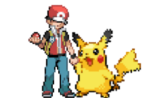

Motivos Irresistíveis para Amar Pokémon
Desde o seu surgimento em 1996, Pokémon conquistou corações em todo o mundo, tornando-se uma franquia icônica que transcende gerações. Não se trata apenas de um jogo, uma série animada ou um conjunto de cartas colecionáveis; Pokémon é uma experiência que cativa e proporciona inúmeras razões para nutrir um amor duradouro. Neste artigo, exploraremos alguns motivos irresistíveis pelos quais Pokémon se tornou um fenômeno cultural tão amado.
Diversidade de Criaturas:
O vasto e diversificado mundo Pokémon é habitado por criaturas de todas as formas, tamanhos e tipos. Desde os adoráveis Pikachu e Eevee até os impressionantes Lugia e Rayquaza, a variedade de designs e personalidades das criaturas cativa a imaginação de crianças e adultos.

Charizard, Milotic, Umbreon e Pikachu (com lindos balões) são pokémon que você pode avistar e capturar se aventurando nos jogos da franquia, como também, apreciar assistindo o anime.
Aventuras Inesquecíveis:
Cada jornada Pokémon é uma epopeia emocionante. Treinadores embarcam em viagens para se tornarem Mestres Pokémon, enfrentando desafios, superando obstáculos e fazendo amizades ao longo do caminho. As aventuras épicas são enriquecidas pela narrativa envolvente e pelos personagens carismáticos.
Ash e Pikachu abraçados. ~ quanta fofura (^-^)
Liga Pokémon e Competições - Desenvolvimento de Estratégias
Pokémon vai além do simples combate. Os jogos estimulam o pensamento estratégico, exigindo que os treinadores considerem os tipos de Pokémon, movimentos e táticas. Essa profundidade estratégica adiciona uma camada fascinante à experiência de jogo.
Cultura Pokémon:
A franquia abrange música, filmes, séries animadas, brinquedos e uma infinidade de produtos. A cultura Pokémon transcende as telas, integrando-se à vida cotidiana de seus fãs, criando uma comunidade global unida pelo amor compartilhado por essas adoráveis criaturas.
Evolução e Vínculo Pokémon:
A relação entre treinadores e seus Pokémon é um dos pilares emocionais da série. A jornada de crescimento e evolução das criaturas, juntamente com a construção de laços emocionais, cria uma narrativa única e comovente.
Red (personagem do jogo Pokémon Fire Red) com o seu amigo Pikachu.
Legado Duradouro:
Com mais de duas décadas de existência, Pokémon se tornou um fenômeno duradouro que transcende gerações. Pais compartilham sua paixão com seus filhos, criando um vínculo especial que atravessa o tempo e as fronteiras culturais.
Parada Pokémon reunindo público de todas as idades.
Inovação Constante:
A franquia Pokémon não tem medo de se reinventar. Novas regiões, mecânicas de jogo e gerações de Pokémon mantêm a experiência sempre fresca e emocionante, garantindo que a chama do entusiasmo nunca se apague.
Em resumo, Pokémon é muito mais do que um simples jogo. É uma jornada emocional, uma comunidade global e um fenômeno cultural que continua a conquistar corações. Ao explorar o vasto universo de Pokémon, descobrimos que as razões para amar são tão diversas quanto as próprias criaturas que o habitam.